Tenemos dificultades en la interpretación precisa de valores numéricos, pero podemos percibir cambios en color, forma y tamaño con facilidad.
Ejercicio
¿Qué información proporciona la tabla?
¿Qué nivel educativo tiene la mayor inscripción?
¿Se puede comparar fácilmente la inscripción en distintas ciudades entre el año 1 y el año 2?
¿Cómo haría para mostrar información acerca de estos datos?
Ciudad
Preescolar Año 1
Preescolar Año 2
Primaria Año 1
Primaria Año 2
Secundaria Año 1
Secundaria Año 2
Mejora Preescolar Año 2 vs Año 1
A
11.1
18
66.4
77
19.9
32.2
6.9
B
7.5
15.2
62.8
73.8
14.4
23.1
7.7
C
23.6
26.6
77.7
86.8
35.2
59.2
3
D
10.9
17.5
66.2
76.8
19.7
31.4
6.6
E
17.7
25.8
81.9
92.7
42.1
64.2
8.1
F
28.2
26.4
77.1
84.5
33.2
55.4
-1.8
G
7.2
14.7
62.6
73.5
13.9
22.8
7.5
H
18.5
36.1
71.8
85
27.5
61
17.6
I
16.7
32.5
64.6
76.5
24.8
54.9
15.84
J
9.7
17.9
62.5
75.6
18.3
29.8
8.2
K
12.8
18
70.6
78.5
21.6
34.6
5.2
Note
Trabajar con datos tabulares obliga a los usuarios a realizar cálculos mentales, mientras que el uso de gráficas facilita la comparación de información.
Ejercicio (continuación)
Crear una gráfica a partir de los datos anteriores. Para ello, piensa:
¿Qué información deseas comunicar en la visualización?
¿Quién es o quiénes son la audiencia a la que te diriges?
Si tienes múltiples audiencias, ¿habrá más de una salida de datos? Explica por qué si o por qué no.
import pandas as pdimport matplotlib.pyplot as pltdata = df = pd.read_csv("data/datos_inscripcion.csv", index_col="Ciudad")df_filtrado = df.drop(columns=["Mejora Preescolar"])plt.figure()df_filtrado.plot(kind="bar", figsize=(12, 6), colormap="viridis")plt.title("Estadísticas de inscripción por ciudad")plt.xlabel("Ciudad")plt.ylabel("Número de inscritos (miles)")plt.legend()plt.grid(alpha=0.7)plt.show()
<Figure size 960x480 with 0 Axes>
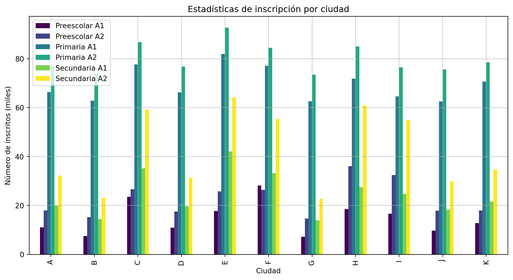
¿Qué información proporciona la gráfica?
¿Se puede identificar fácilmente qué nivel educativo tiene la mayor inscripción?
¿Se puede comparar fácilmente la inscripción en distintas ciudades entre el año 1 y el año 2?
¿Es más fácil responder estas preguntas en comparación con la tabla?
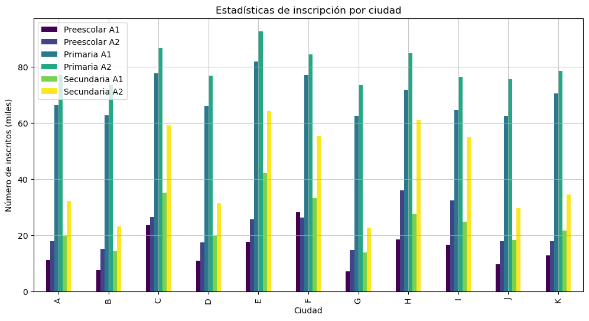
Note
Diseñar una visualización no es trivial: debemos equilibrar simplicidad y detalle para evitar sobrecarga cognitiva y asegurar una interpretación eficiente de los datos.
Enfoquémonos en un objetivo para la gráfica: resaltar las tendencias en la inscripción en pre-primaria a lo largo del tiempo.
Deberíamos poder responder rápidamente cuáles son las tres ciudades donde la donde la inscripción en pre-primaria ha mejorado más con el tiempo.
¿Qué gráfica sería mejor opción a la anterior?
# opcion 1df_filtrado2 = df[["Preescolar A1", "Preescolar A2"]]plt.figure()df_filtrado2.plot(kind="bar", figsize=(12, 6), colormap="cool")plt.title("Estadísticas de inscripción por ciudad")plt.xlabel("Ciudad")plt.ylabel("Número de inscritos (miles)")plt.legend()plt.grid(alpha=0.7)plt.show()
<Figure size 960x480 with 0 Axes>
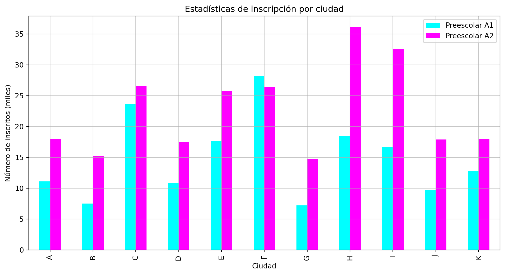
# opcion 2plt.figure()df_filtrado3 = df[["Mejora Preescolar"]]df_ordenado = df_filtrado3.sort_values(by="Mejora Preescolar", ascending=False)df_ordenado.plot(kind="bar", figsize=(12, 6), colormap="cool")plt.title("Mejora de inscritos (miles) por ciudad")plt.xlabel("Ciudad")plt.grid(alpha=0.7)plt.show()
<Figure size 960x480 with 0 Axes>
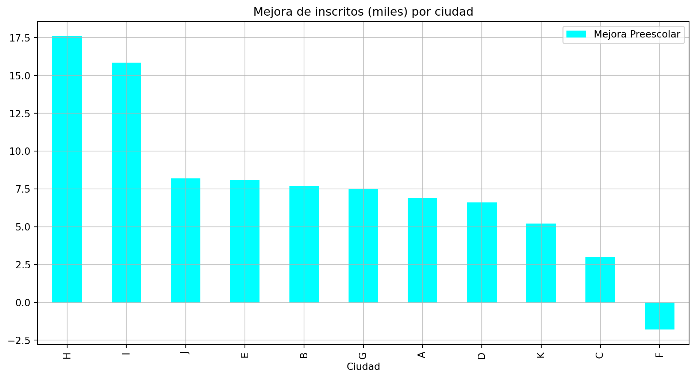
¿Cuál el objetivo de la visualización de datos?
O dicho de otro modo: ¿Por qué incluir a los humanos en el proceso de toma de decisiones?
La visualización permite analizar datos cuando no se sabe exactamente qué preguntas hacer de antemano.
En problemas mal definidos, nos ayuda a explorar visualmente los datos y encontrar patrones inesperados.
Si bien algunos procesos pueden ser completamente automatizados, otros requieren validación y supervisión humana.
…y en IA, ¿para qué nos sirve la visualización de datos?
Facilita la comprensión de grandes volúmenes de datos.
Mejora la interpretabilidad de modelos de IA complejos.
Permite la validación de modelos y la depuración de errores en algoritmos de Machine Learning.
Dentro de los atributos cuantitativos, la dirección del orden puede ser: - Secuencial: Valores de menor a mayor (o al revés). (Ejemplo: ingresos anuales). - Divergente: Punto de referencia central con dos direcciones. (Ejemplo: altitud con respecto al nivel del mar). - Cíclica: Valores que se repiten en un ciclo. (Ejemplo: días de la semana, horas del reloj).
Además, los atributos cuantitativos también los podemos clasificar en: - Escalares: Un solo valor por punto, sin dirección. (Ejemplo: temperatura en una ciudad, presión atmosférica, concentración de una sustancia química en un líquido). - Vectoriales: Un valor multidimensional, por lo general dos (magnitud y dirección), lo que significa que su valor se representa con una flecha en un espacio determinado. (Ejemplo: velocidad del viento, campo magnético en un punto del espacio, fuerza aplicada sobre un objeto).
Tipos de visualizaciones básicas y su aplicación
¿Qué es una visualización “básica”?
Una visualización básica es aquella que representa datos con canales visuales simples y un número reducido de dimensiones, por ejemplo:
Usar la posición en el eje Y para representar una magnitud.
Usar el color para distinguir categorías.
Usar el tamaño para sugerir importancia relativa.
Estos gráficos son denominados “básicos” no por su simplicidad técnica, sino porque:
Son ampliamente utilizados en casi todos los dominios.
Están bien soportados por herramientas gráficas.
Son fácilmente interpretables por humanos.
¿Qué factores determinan el tipo de gráfico?
Naturaleza de la variable independiente (x):
Categórica sin orden (nominal)
Categórica con orden (ordinal)
Continua (intervalo o razón)
Número de variables:
Univariada
Bivariada
Multivariada (requiere codificación adicional)
Objetivo del análisis:
Distribución
Comparación
Asociación
Composición
Evolución temporal
Variabilidad
Tipo de gráfico
Ideal para…
Ejemplo
Línea
Mostrar evolución temporal
Población de México a lo largo de décadas
Barras
Comparar cantidades categóricas
PIB por continente en 2007
Histogramas
Visualizar distribución
Distribución de la esperanza de vida global
Boxplots
Comparar distribuciones y outliers
Variabilidad del ingreso por país
Dispersión
Explorar relaciones bivariadas
Esperanza de vida vs. ingreso
Heatmap
Ver intensidad sobre una matriz
Correlación entre variables numéricas
Mapas
Visualizar datos geoespaciales
Esperanza de vida por país en un mapa de coropletas
O seleccionar la gráfica según la pregunta a responder:
Pregunta
Gráfica recomendada
¿Cómo ha cambiado una variable con el tiempo?
Línea
¿Cuál es la diferencia entre categorías?
Barras
¿Qué tan dispersos están los valores?
Histograma / boxplot
¿Existe una correlación entre dos variables numéricas?
Dispersión
¿Cómo se relacionan múltiples variables?
Pairplot / heatmap
¿Cómo varían los datos entre regiones geográficas?
Mapa
IMPORTANTE. Considerar que:
Barras ≠ Histogramas
Barras: variables categóricas (eje X no tiene orden intrínseco)
Histogramas: variables continuas (rangos numéricos en X)
Boxplot vs histograma
Histograma muestra la forma completa de la distribución
Boxplot muestra resumen estadístico + outliers
Dispersión no es solo para correlación También permite observar agrupamientos, densidad de puntos, outliers conjuntos.
Revisaremos el proceso para crear una visualización efectiva, desde la limpieza de datos hasta la validación del mensaje transmitido, más adelante en la clase.
Antes, vamos a practicar con algunos ejercicios para familiarizarnos con las bibliotecas de gráficos y su aplicación a diferentes preguntas de análisis.
Herramientas de visualización de datos
Existen muchas herramientas para crear visualizaciones de datos, cada una con sus propias ventajas y limitaciones.
Algunas de las más populares incluyen:
Matplotlib: Biblioteca de gráficos 2D para Python, altamente personalizable.
Seaborn: Basada en Matplotlib, ofrece gráficos estadísticos de alto nivel.
Plotly: Permite crear gráficos interactivos y visualizaciones web.
ggplot2: Biblioteca de R para gráficos basados en la gramática de gráficos.
Tableau: Herramienta comercial para visualización de datos sin necesidad de programación.
Power BI: Plataforma de Microsoft para análisis y visualización de datos empresariales.
Visualización con Matplotlib
Matplotlib es la biblioteca más veterana y versátil para visualización científica en Python.
Permite crear una amplia variedad de gráficas (estáticas, animadas).
Su principal módulo es pyplot, que proporciona una interfaz similar a MATLAB para creación de gráficas.
A diferencia de pandas.plot(), permite un control total sobre cada componente del gráfico:
Note
Si una gráfica debe ajustarse con precisión o prepararse para publicación profesional, matplotlib es la herramienta más apropiada.
Anatomía de matplotlib
Figura (Figure): Es el lienzo general donde se colocan uno o más gráficos.
Ejes (Axes): Representa un gráfico específico dentro de la figura.
Eje X e Y (Axis): Son los ejes de coordenadas del gráfico.
Tiques (Ticks): Son las marcas de referencia en los ejes.
Leyenda (Legend): Muestra información sobre los datos representados.
Título (Title) y etiquetas (Labels): Son los textos que explican el gráfico.
Cuadrícula (Grid): Líneas de referencia para facilitar la lectura del gráfico.
Estilo imperativo (pyplot): crear gráficos sin necesidad de definir objetos. Este enfoque se usa para gráficos simples y rápidos.
Estilo orientado a objetos: permite un control más detallado de las figuras y los ejes. Este método es mejor para personalizar gráficas de manera avanzada y trabajar con múltiples subgráficas. Dentro de este estilo hay dos maneras:
Modo plt.figure() + add_subplot() (método clásico)
Modo plt.subplots() (método recomendado para subgráficas)
Ejemplo con modo funcional
Importar la biblioteca Matplotlib y el submódulo pyplot (plt).
Dibujar sobre un único eje usando el mismo submódulo plt.
Añadir elementos extra (anotaciones, título): Se pueden añadir anotaciones, títulos, leyendas, etc. a la gráfica.
Mostrar/guardar la gráfica: Se utiliza la función plt.show() para mostrar la gráfica en pantalla. Se pueden guardar las gráficas en diferentes formatos como PNG, JPEG, PDF, etc.
Importar la biblioteca Matplotlib y el submódulo pyplot.
Crear figura: Se puede especificar el tamaño de la figura y otros parámetros.
Obtener ejes: Los ejes son las áreas donde realmente se dibujan las gráficas. Una figura puede tener uno o más ejes.
Dibujar sobre los ejes: Se utilizan diferentes funciones para dibujar diferentes tipos de gráficas, como plt.plot() para líneas, plt.scatter() para puntos, plt.bar() para barras, etc.
Añadir elementos extra (anotaciones, título): Se pueden añadir anotaciones, títulos, leyendas, etc. a la gráfica.
Mostrar/guardar la gráfica: Se utiliza la función plt.show() para mostrar la gráfica en pantalla. Se pueden guardar las gráficas en diferentes formatos como PNG, JPEG, PDF, etc.
Alternativa al boxplot con información de densidad
Step plot
ax.step()
Datos que cambian a intervalos fijos (ej. conteos acumulativos)
Error bar plot
ax.errorbar()
Relación entre variables con intervalos de confianza o error
Polar
ax.plot(θ, r) con projection='polar'
Datos circulares, ángulos, direcciones
Gráfico de barras apiladas
ax.bar(..., bottom=...)
Comparar categorías acumuladas en una misma barra
Personalización
Elemento
Método (OO)
¿Para qué sirve?
Ejemplo breve
Título
ax.set_title()
Añadir título al gráfico
ax.set_title("Mi gráfico")
Etiquetas
ax.set_xlabel(), ax.set_ylabel()
Etiquetar ejes
ax.set_xlabel("Eje X")
Leyenda
ax.legend()
Mostrar significado de líneas
ax.plot(..., label="..."); ax.legend()
Anotaciones
ax.annotate()
Resaltar un punto clave
ax.annotate("Punto", xy=..., xytext=...)
Línea
Argumentos en ax.plot()
Personalizar color, estilo, grosor, marcador
color=, linestyle=, linewidth=, marker=
Cuadrícula
ax.grid()
Mostrar líneas de guía
ax.grid(True)
Estilos globales
plt.style.use()
Cambiar el tema general del gráfico
plt.style.use('ggplot')
Ejes y ticks
ax.set_xticks(), ax.set_yticks()
Controlar escala y marcas
ax.set_xticks(np.arange(0,11,1))
import matplotlib.pyplot as pltimport numpy as np# Establecer estilo visual globalplt.style.use('ggplot')# Datosx = np.linspace(0, 10, 100)y = np.sin(x)# Crear figura y ejesfig, ax = plt.subplots()# Línea personalizadaax.plot(x, y, label='sin(x)', color='purple', linestyle='--', linewidth=2, marker='o', markersize=4)# Títulos y etiquetasax.set_title("Gráfica de sin(x)", fontsize=14, fontweight='bold')ax.set_xlabel("Eje X", fontsize=12)ax.set_ylabel("Eje Y", fontsize=12)# Cuadrículaax.grid(True, linestyle=':', linewidth=0.8, alpha=0.6)# Leyendaax.legend(loc='upper right', fontsize=10)# Anotaciónax.annotate("Máximo", xy=(np.pi/2, 1), xytext=(2, 1.3), arrowprops=dict(arrowstyle="->", color='black'), fontsize=10)plt.show()# Volver a los estilos por defaultplt.rcdefaults()
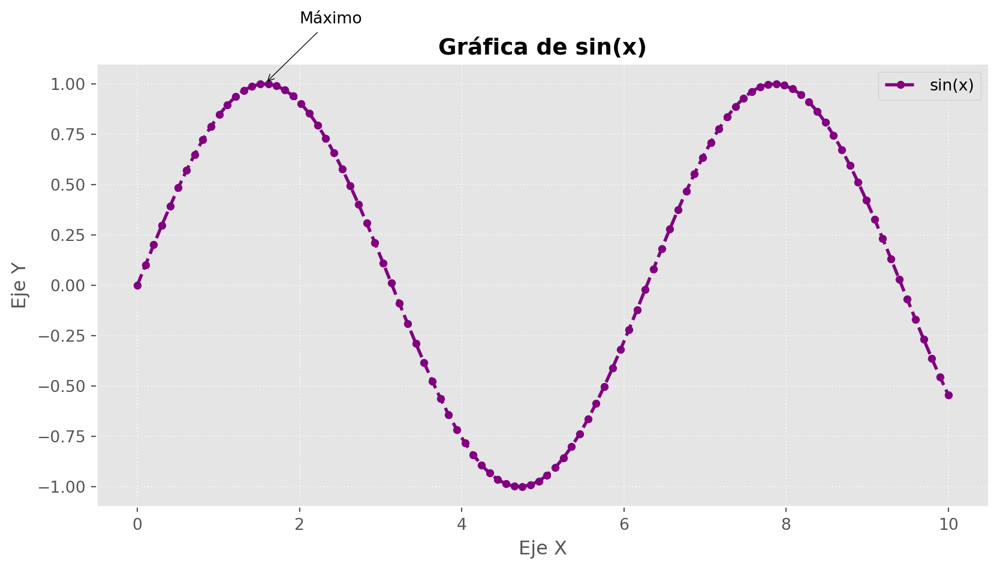
Dataset Gapminder
El dataset que estaremos usando para ejemplificar el uso de las herramientas de visualización proviene de la fundación Gapminder, una organización sin fines de lucro creada por Hans Rosling.
Su objetivo es hacer comprensibles las estadísticas globales sobre desarrollo humano, economía y salud, a través de visualizaciones atractivas y dinámicas.
La versión simplificada que estaremos utilizando es gapminder-FiveYearData.csv, que contiene datos de 175 países recolectados desde 1998 hasta 2018.
Columna
Tipo
Descripción
country
Categórica
Nombre del país
continent
Categórica
Continente al que pertenece el país
year
Numérica
Año de la observación
life_exp
Numérica
Esperanza de vida al nacer (en años)
hdi_index
Numérica
Índice HDI para un país en un determinado año
co2_consump
Numérica
Describe las emisiones de CO2 en toneladas por persona de un país determinado en un año determinado
gdp
Numérica
Producto Interno Bruto per cápita (ajustado a dólares constantes)
services
Numérica
Describe el porcentaje de trabajadores de servicios de un país determinado en un año determinado
import pandas as pdimport matplotlib.pyplot as pltdf = pd.read_csv("data/gapminder_data_graphs.csv")df_2018 = df[df["year"] ==2018]df.head()
country
continent
year
life_exp
hdi_index
co2_consump
gdp
services
0
Afghanistan
Asia
1998
53.3
0.344
0.0522
NaN
24.4
1
Afghanistan
Asia
1999
54.7
0.348
0.0402
NaN
24.6
2
Afghanistan
Asia
2000
54.7
0.350
0.0370
NaN
24.7
3
Afghanistan
Asia
2001
54.8
0.353
0.0376
NaN
24.7
4
Afghanistan
Asia
2002
55.5
0.384
0.0471
333.0
25.6
Ejemplo 1
¿Cómo podemos mostrar la evolución del CO2 per cápita de varios países seleccionados, destacando con anotaciones el punto máximo de cada uno?
paises = ['United States', 'Mexico', 'China', 'India']df_filtrado = df[df['country'].isin(paises)]df_filtrado.head()fig, ax = plt.subplots(figsize=(10, 5))for pais in paises: df_pais = df_filtrado[df_filtrado['country']==pais] co2_consump = df_pais['co2_consump'] year = df_pais['year'] ax.plot(year, co2_consump, label=pais)# maximo año_max = df_pais.loc[df_pais['co2_consump'].idxmax(), 'year'] consumo_max = df_pais['co2_consump'].max() ax.annotate("Máximo",xy=(año_max, consumo_max), xytext=(año_max+0.5, consumo_max+0.5), arrowprops=dict(arrowstyle="->", color='black'))ax.set_xlabel('Año')ax.set_ylabel('Emisiones CO2 (toneladas per capita)')ax.set_title('Emisiones CO2 per capita de 1998 a 2018')ax.set_xticks(range(1998, 2019, 2))plt.grid()plt.legend()plt.show()
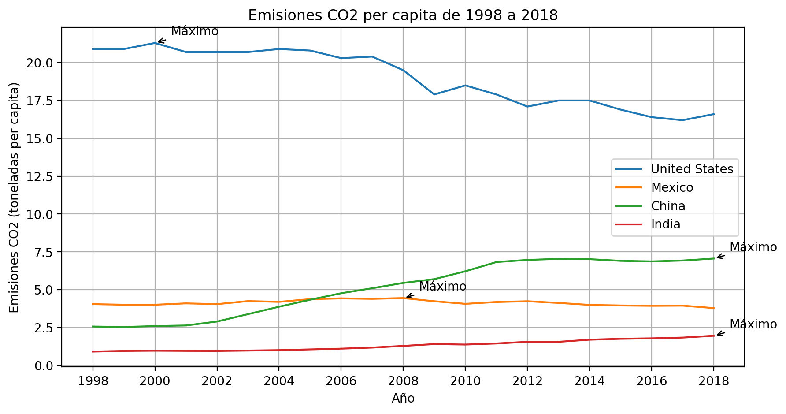
Ejemplo 2
¿Cómo visualizar la relación entre esperanza de vida y PIB per cápita en 2018, donde el tamaño de cada punto representa las emisiones CO2?
fig, ax = plt.subplots(figsize=(10, 5))ax.scatter(df_2018['life_exp'], df_2018['gdp'], s = df_2018['co2_consump']*2)ax.set_yscale('log')ax.set_xlabel('Esperanza de vida (años)')ax.set_ylabel('PIB (USD)')ax.set_title("Esperanza de vida vs PIB per cápita vs Emisiones CO2 (2018)")sizes = [1, 5, 10]handles = [ plt.scatter([], [], s=size*2, color="gray", label=f"{size}")for size in sizes]ax.legend(handles=handles, title="Consumo CO₂")plt.grid()plt.show()
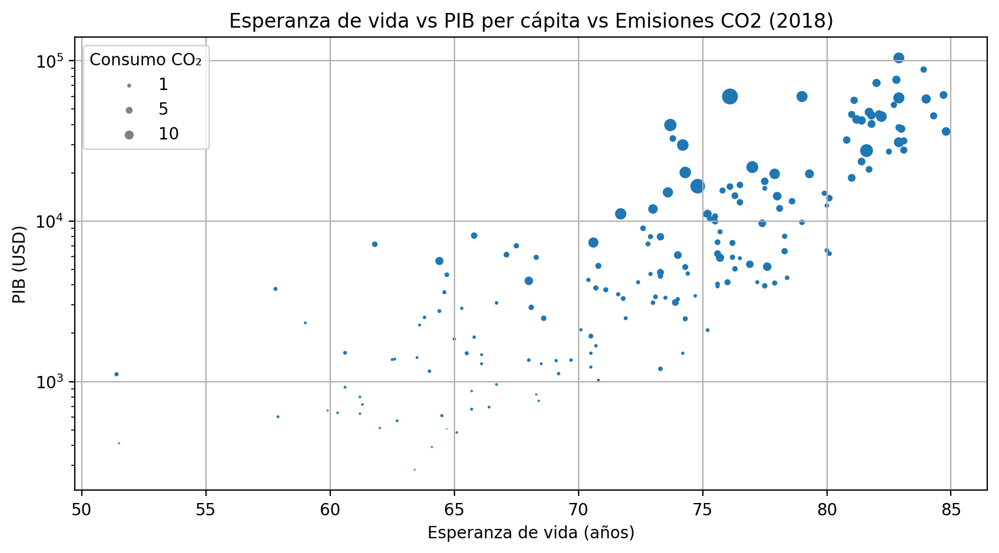
Ejemplo 3
¿Cómo podríamos observar la distribución de la esperanza de vida por continente en 2018?
continentes = df_2018['continent'].unique()lifeexp_por_contiente = [df_2018[df_2018['continent'] == continente]['life_exp'] for continente in continentes]fig, ax = plt.subplots(figsize=(8, 5))parts= ax.violinplot(lifeexp_por_contiente)ax.set_xticks(range(1, len(continentes)+1))ax.set_xticklabels(continentes)ax.set_title("Distribución de esperanza de vida por continente (2018)")ax.set_ylabel("Esperanza de vida (años)")plt.grid()plt.show()
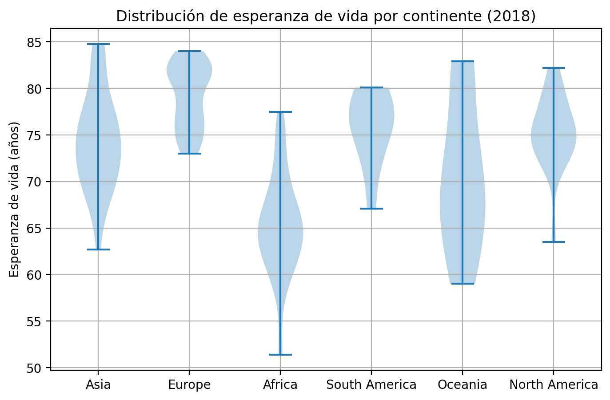
Ejercicio
Parte 1. Organización de los archivos
Organiza tu ejercicio con la siguiente estructura:
IMPORTANTE: Para las partes siguientes, implementa funciones para construir las visualizaciones solicitadas, dentro del archivo visualizaciones.py, y manda llamar a tus funciones a través de main.py. Además, asegúrate de que todas las gráficas tengan títulos, etiquetas y leyendas cuando sea necesario.
Parte 3. Visualización con matplotlib
En esta sección, emplea funciones de matplotlib para construir visualizaciones más personalizadas y detalladas.
Construye una figura con tres subgráficas horizontales, que muestre:
Número de películas por año
Presupuesto promedio por año
Ingresos promedio por año
Construye una gráfica que muestre la comparación de cantidad de películas por género.
Supongamos que ahora nos interesa conocer el porcentaje de películas con ingresos bajo (0 a 10 millones de USD), medio (10 a 50 millones de USD) y alto (más de 50 millones de USD) para cada género. Construye una gráfica de barras apiladas mostrando el porcentaje de películas por tipo de ingreso en cada género.
Guarda las gráficas generadas en la carpeta resultados/, con los nombres matplotlib_subplot-año.png, matplotlib_barras-categorias.png, y matplotlib_barras-categorias-presupuesto.png, respectivamente.
Visualización directa con pandas
La biblioteca pandas permite construir gráficos directamente desde un DataFrame gracias a su método .plot(), el cual está basado internamente en matplotlib. Esta funcionalidad es útil cuando:
Se requiere una visualización rápida y exploratoria.
Se desea trabajar directamente desde los datos, sin cambiar de biblioteca.
kind: tipo de gráfico (line, bar, hist, box, scatter, etc.)
x, y: columnas del DataFrame a usar como coordenadas (para gráficos bivariados)
Otras opciones: title, figsize, color, grid, etc.
Note
pandas automáticamente gestiona el eje x si no se especifica, y muchas veces infiere el tipo de gráfico por el contexto.
Tipos de gráficos más usados
Tipo
kind
Uso principal
Línea
'line'
Evolución temporal de una variable
Barras
'bar'
Comparación entre categorías
Histograma
'hist'
Distribución de una variable
Dispersión
'scatter'
Relación entre dos variables
Caja
'box'
Distribución + outliers por grupo
Pastel
'pie'
Proporción (categorías)
Ejemplo 1
¿Cómo podríamos visualizar la esperanza de vida la población mundial desde 1998?
pop_by_year = df.groupby('year')['life_exp'].mean()pop_by_year.plot(kind='line', x='year', y='', title="Esperanza de vida mundial de 1998 a 2018", grid=True, figsize=(15, 5))plt.xlabel("Año")plt.ylabel("Esperanza de vida")plt.xticks(pop_by_year.index)plt.show()
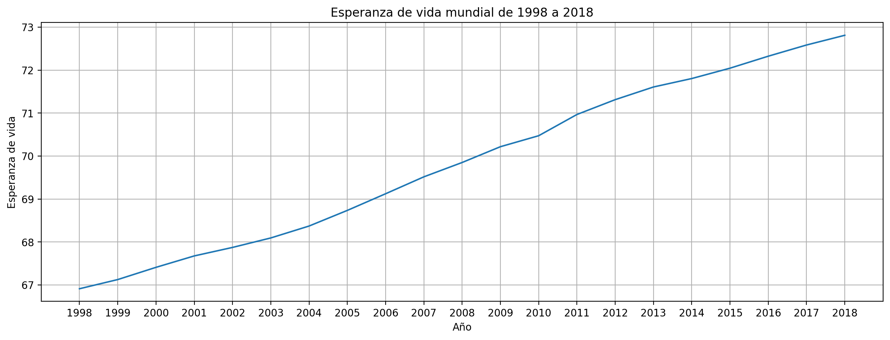
Ejemplo 2
¿Cómo podríamos analizar la distribución del índice HDI en 2018?
df_2018['hdi_index'].plot(kind='hist', bins =15, color='lightblue', edgecolor='black', title="Distribución mundial de índice HDI en 2018")plt.grid(axis='y')plt.xlabel('HDI index')plt.ylabel('Frecuencia')etiquetas_y =list(range(0, 20))plt.yticks(etiquetas_y)plt.show()
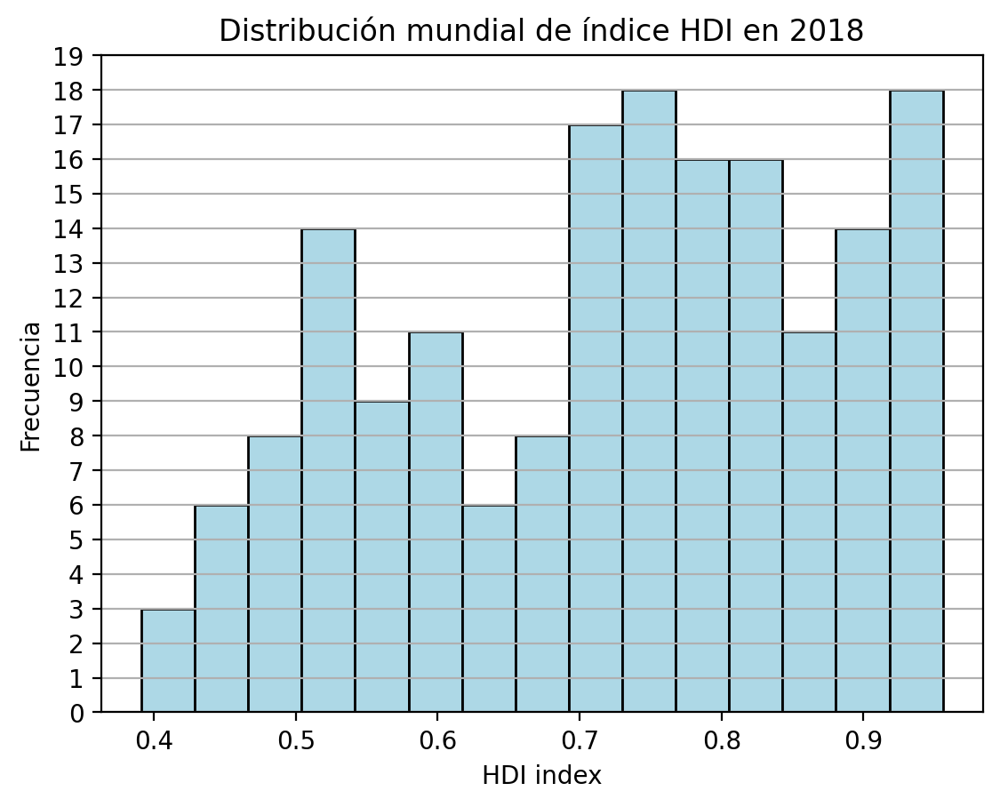
Ejemplo 3
¿Cómo podríamos comparar el PIB per cápita de los países europeos en 2018?
¿Cómo podríamos comparar la distribución de esperanza de vida por continente?
df_2018.plot(kind='box', column='life_exp', by='continent', figsize=(10, 6))plt.title("Esperanza de vida por continente en 2018")plt.ylabel('Años')plt.show()
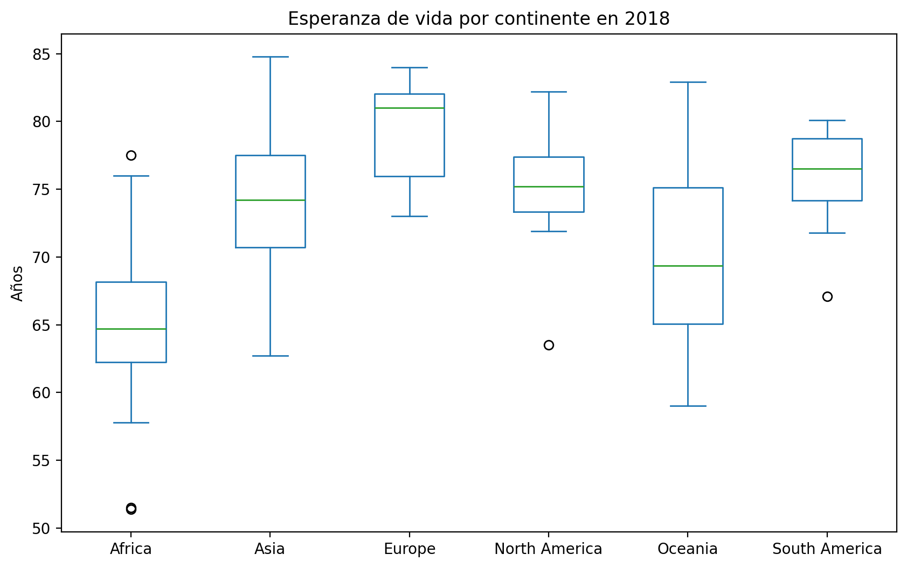
Ejemplo 5
¿Cómo podríamos explorar la relación entre PIB y esperanza de vida en 2018?
df_2018.plot(kind='scatter', x='gdp', y='life_exp', alpha=0.6)plt.xscale('log')plt.xlabel('PIB per cápita')plt.ylabel('Esperanza de vida')plt.title('PIB per cápita vs. esperanza de vida en 2018')plt.grid()plt.show()
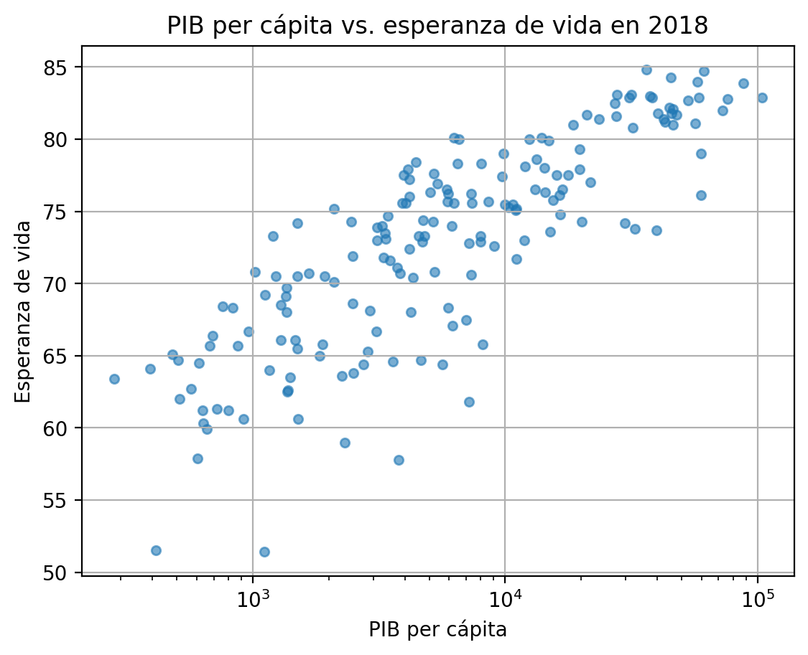
Ejercicio 7 (continuación)
Parte 4. Visualización con pandas
En esta sección, deberás construir visualizaciones utilizando métodos propios de pandas. Implementa las siguientes visualizaciones:
Genera una gráfica de barras que muestre la cantidad de películas estrenadas por año. ¿En que año(s) hubo más películas?
Aplica la siguiente transformación a la columna de lista_generos para convertirla nuevamente a un objeto tipo lista: df[‘lista_generos’] = df[‘lista_generos’].apply(eval)
Crea una nueva variable llamada genero_principal con el primer género listado, y crea un boxplot que muestre la distribución del revenue por género principal. ¿Qué géneros tienden a tener un revenue más alto o más bajo?
Realiza un gráfico de dispersión que relacione el presupuesto con los ingresos de las películas. ¿Qué puedes concluir?
Guarda las gráficas generadas en la carpeta resultados/, con los nombres pandas_barras-peliculas.png, pandas_boxplot-revenue.png, y pandas_dispersion-presupuesto.png, respectivamente.
Visualización con Seaborn
Seaborn es una biblioteca de visualización de datos basada en matplotlib que proporciona una interfaz de alto nivel para dibujar gráficas estadísticas atractivas y con estilo.
Se integra directamente con pandas y NumPy.
Tiene estilos por defecto que mejoran la estética.
Agrega elementos estadísticos automáticamente (regresiones, boxplots, medias, etc.).
import seaborn as snsimport matplotlib.pyplot as plt
Estilos y configuración
Seaborn aplica estilos automáticamente, pero pueden personalizarse con:
¿Cómo podemos mostrar la evolución del CO2 per cápita de varios países seleccionados?
paises = ['United States', 'Mexico', 'China', 'India']df_filtrado = df[df['country'].isin(paises)]ax= sns.lineplot(data=df_filtrado, x='year', y='co2_consump', hue='country')ax.set_xlabel('Año')ax.set_ylabel('Emisiones CO2 (toneladas per capita)')ax.set_title('Emisiones CO2 per capita de 1998 a 2018')ax.set_xticks(range(1998, 2019, 2))plt.legend(title='Paises')plt.show()
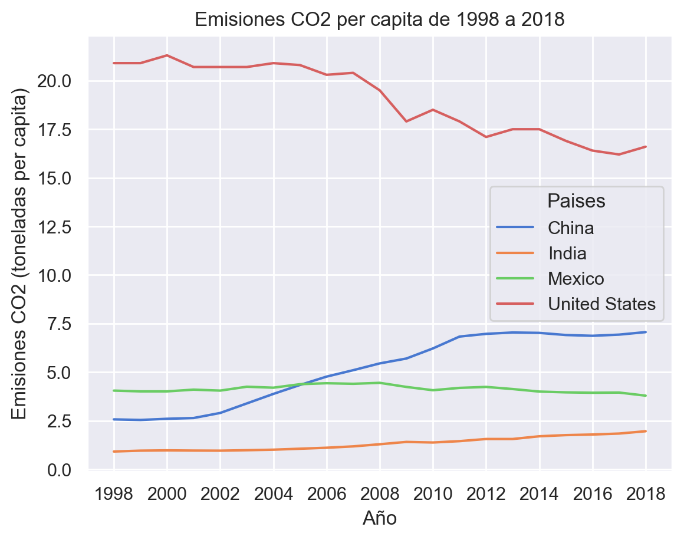
Ejemplo 2
¿Cómo visualizar la relación entre esperanza de vida y PIB per cápita en 2018?
# Una opción fig = plt.figure(figsize=(15, 5))sns.regplot(data=df_2018, y="gdp", x="life_exp", logx=True)plt.xlabel('Esperanza de vida (años)')plt.ylabel('PIB (lUSD)')plt.title("Esperanza de vida vs. PIB per cápita (2018)")plt.show()# Otra opción fig = plt.figure(figsize=(15, 5))sns.scatterplot(data=df_2018, x="life_exp", y="gdp", hue="continent", size="co2_consump", sizes=(40, 400), alpha=0.7)plt.yscale('log')plt.xlabel('Esperanza de vida (años)')plt.ylabel('PIB (lUSD)')plt.title("Esperanza de vida vs PIB per cápita (2018)")plt.show()
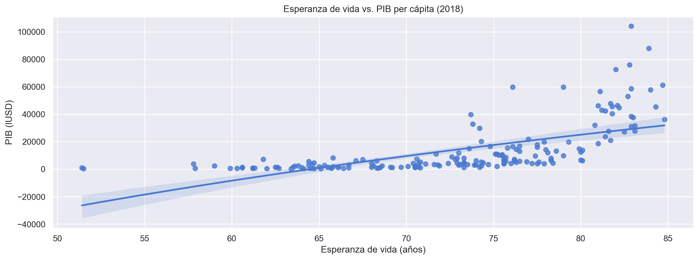
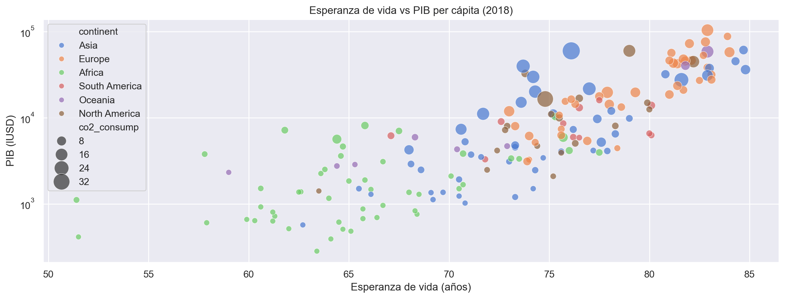
Ejemplo 3
¿Cómo podríamos observar la distribución de la esperanza de vida por continente en 2018?
fig = plt.figure(figsize=(8, 5))sns.boxplot(data = df_2018, x='continent', y='life_exp', hue='continent')plt.title("Distribución de la esperanza de vida por continente (2018)")plt.show()
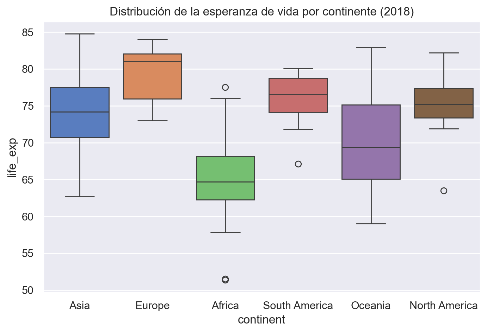
Ejemplo 4
Para variables numéricas en todos los años.
# una opcióncorr = df[["life_exp", "gdp", "co2_consump", "year"]].corr()plt.figure(figsize=(8, 6))sns.heatmap(corr, annot=True, cmap="coolwarm", fmt=".2f")plt.title("Matriz de correlación")plt.show()# otra opciónplt.figure(figsize=(8, 6))sns.pairplot(df_2018[["life_exp", "gdp", "co2_consump", 'continent']], hue='continent')plt.show()
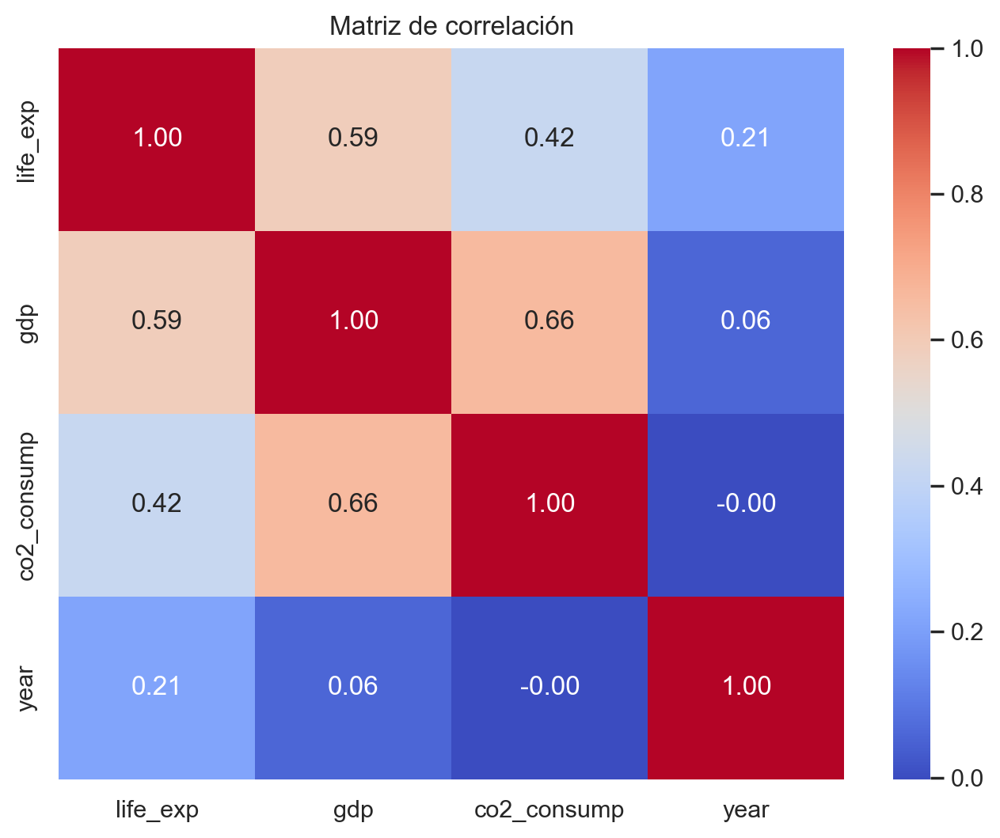
<Figure size 800x600 with 0 Axes>
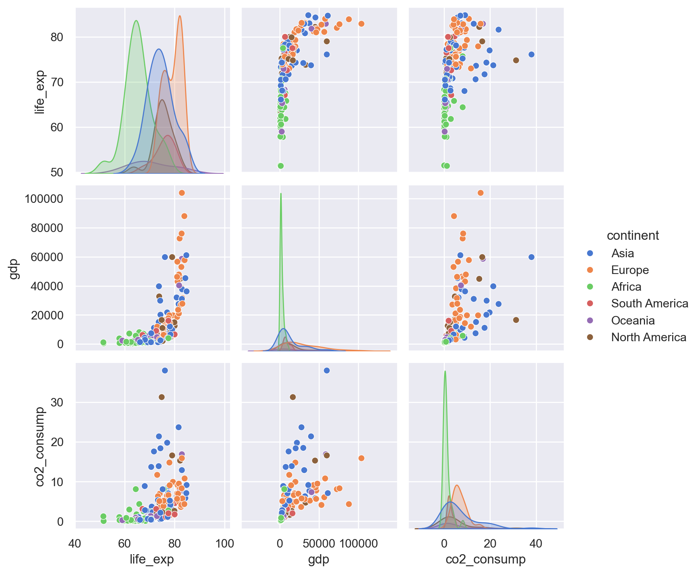
Ejercicio 7 (continuación)
Parte 5. Visualización con seaborn
En esta sección, trabaja con la biblioteca seaborn para generar las siguientes visualizaciones:
Gráfica que muestre cómo ha cambiado el presupuesto promedio con el tiempo.
Construye una tabla que cuente cuántas películas se estrenaron por año y por género principal. Usa esa tabla para generar un mapa de calor donde el eje X sea el año, el eje Y sea el género principal, y los colores representen el número de películas.
Genera una visualización que muestre cómo varía el ingreso según el género principal de la película. Escoge solamente tres géneros.
Guarda las gráficas generadas en la carpeta resultados/, con los nombres seaborn_distribucion-roi.png, seaborn_heatmap-year-genero.png, seaborn_distribucion-revenue-genero.png
Visualización interactiva con Plotly
Plotly es una biblioteca de visualización gráfica interactiva basada en JavaScript, pero con interfaces disponibles para Python, R y Julia.
A diferencia de matplotlib (enfocada en gráficos estáticos), Plotly produce gráficos que permiten:
Zoom interactivo y desplazamiento.
Mostrar etiquetas al pasar el cursor.
Exportar en formatos interactivos (HTML, JSON).
Crear animaciones fácilmente.
Plotly Express
Permite crear gráficos de alto nivel de forma rápida, declarativa y sencilla.
Todas las funciones de plotly.express (generalmente se importa como px) generan gráficos completos con una sola línea de código.
Trabaja directamente con dataframes de pandas.
Parámetros como x, y, color, size, facet_row, facet_col o animation_frame permiten construir visualizaciones interactivas y atractivas sin escribir tanto código.
Tipos de gráficas
Tipo de gráfica
Función
Ideal para…
Personalizaciones
Línea
px.line()
Evoluciones temporales o series de tiempo
line_shape, markers
Barras
px.bar()
Comparaciones categóricas
barmode, orientation
Dispersión
px.scatter()
Relaciones entre variables numéricas
size, color, hover_name
Histograma
px.histogram()
Distribución de una variable continua
nbins, marginal
Área
px.area()
Evoluciones acumuladas
stackgroup
Caja (boxplot)
px.box()
Comparar distribuciones entre grupos
points, color
Violín
px.violin()
Visualizar forma de la distribución
box=True, points='all'
Densidad (contornos)
px.density_contour()
Visualizar concentraciones de puntos
contours_coloring
Burbuja
px.scatter() + size
Relaciones con variable adicional cuantitativa
size_max, opacity
Animaciones
animation_frame
Evolución dinámica en el tiempo
animation_group
Mapas coropléticos
px.choropleth()
Datos regionales (países, estados, etc.)
locations, geojson
Gráficos geoespaciales
px.scatter_geo()
Ubicación de datos en el mundo
projection, scope
Líneas de tiempo
px.timeline()
Eventos temporales con duraciones
x_start, x_end, y
import plotly.express as px
fig = px.tipo_de_grafica(
df,
x="variable_x",
y="variable_y",
color="otra_variable",
title="Título del gráfico"
)
# fig.show()
# fig.write_image("grafico.png")
fig.write_html("grafico.html")
Ejemplo 1
¿Cómo podemos mostrar la evolución del CO2 per cápita de varios países seleccionados?
import plotly.express as pximport plotly.io as pio#pio.renderers.default = 'notebook'paises = ['United States', 'Mexico', 'China', 'India']df_filtrado = df[df['country'].isin(paises)]fig = px.line(df_filtrado, x ='year', y='co2_consump', color='country', title='Emisiones CO2 per capita de 1998 a 2018', labels={'year': 'Año','co2_consump': 'Emisiones CO2 (toneladas per cápita)','country': 'País' } )fig.show()
Personalización
Muchos aspectos visuales se personalizan a través de argumentos en la función de graficado.
Parámetro
Qué controla
Ejemplo de uso
color
Color del marcador o línea
color='continent'
symbol
Símbolo del punto en gráficos de dispersión
symbol='region'
size
Tamaño del punto en relación a una variable
size='population
line_group
Agrupa puntos para líneas (por categoría)
line_group='country'
facet_row, facet_col
División en subgráficos (facetas)
facet_row='continent'
labels
Etiquetas amigables en hover y ejes
labels={'gdpPercap': 'PIB per cápita'}
log_x, log_y
Escala logarítmica
log_x=True
category_orders
Orden explícito de categorías
category_orders={'continent': [...]}
Una vez creado el gráfico, se pueden modificar muchos aspectos usando métodos como update_layout, update_xaxes, update_traces. Por ejemplo:
fig.update_layout( title="Esperanza de vida vs PIB per cápita (2018)", xaxis_title="PIB per cápita", yaxis_title="Esperanza de vida", title_font=dict(size=20, family='Arial', color='darkblue'))fig.update_xaxes(showgrid=True, gridwidth=1, gridcolor='LightGray')fig.update_yaxes(showgrid=True, gridwidth=1, gridcolor='LightGray')fig.update_traces(marker=dict(colorscale='Viridis'))
Interactividad
Una de las grandes fortalezas de Plotly es que todas sus gráficas son interactivas por defecto.
No necesitamos configurar nada adicional para aprovechar estas funciones.
Si queremos, podemos personalizar algunas características.
Hover (Información al pasar el cursor)
Cuando el usuario pasa el mouse sobre un punto de la gráfica, aparece un tooltip que muestra los valores asociados a ese punto.
hover_name: Variable que se mostrará como nombre principal en el hover.
hover_data: Lista de columnas que quieres mostrar u ocultar.
Sliders y animaciones
Plotly permite crear gráficas animadas, por ejemplo, para mostrar cómo evoluciona una variable en el tiempo.
animation_frame: Variable categórica que define cada paso de la animación (por ejemplo, el año).
animation_group: Identificador único que mantiene la consistencia de los puntos a lo largo de los frames.
Ejemplo 2
¿Cómo visualizar la relación entre esperanza de vida y PIB per cápita de 1998 a 2018?
Las figuras generadas por Plotly son objetos Figure, que pueden exportarse a un archivo .html completamente interactivo.
fig.write_html("grafica_interactiva.html")
Que puede servir para:
Publicar en páginas web o blogs.
Compartir visualizaciones sin requerir un entorno Python.
Documentar resultados o reportes.
Además, plotly es compatible con Dash y Streamlit, frameworks para crear aplicaciones web interactivas (principalmente dashboards) en Python.
Ejemplo 3:
Visualizar el CO2 per cápita por continente en 2018, mostrando cómo se distribuye entre algunos países destacados.
# Elegimos países con mayor PIB per cápita top_paises = df_2018["co2_consump"].sort_values(ascending=False).head(20).indexdf_filtrado = df_2018.loc[top_paises]# Gráfica de barras apiladasfig = px.bar( df_filtrado, x="continent", y="co2_consump", color="continent", title="C02 per cápita por continente (Top 20 países)", hover_name="country", labels={"co2_consump": "Emisiones CO2"}, barmode="stack")fig.update_layout(showlegend=False)fig.show()fig.write_html("grafica_interactiva.html")
Ejemplo 4:
Visualizar en un mapa mundial cómo varía la esperanza de vida entre países para cada año.
fig = px.choropleth( df, locations="country", locationmode="country names", color="life_exp", hover_name="country", animation_frame="year", color_continuous_scale="Plasma", title="Evolución de la esperanza de vida (1998–2018)", range_color=[df['life_exp'].min(), df['life_exp'].max()] # escala fija)fig.update_layout( geo=dict(showframe=False, projection_type='natural earth'), coloraxis_colorbar=dict(title='Esperanza de vida'))fig.show()
Ejercicio 7 (continuación)
Parte 6. Visualización con plotly
Utiliza plotly para generar las siguientes visualizaciones interactivas:
Gráfica para observar presupuesto vs ingresos (incluye color o tamaño según ROI).
Gráfica de barras para visualizar cuántas películas por categoría de ingresos se estrenaron por año.
Representa la proporción de películas por género en forma de treemap.
Guarda las gráficas generadas en la carpeta resultados/, con los nombres plotly_distribucion-budget-revenue.html, plotly_barras-peliculas-categorias.html, plotly_treemap-genero.html
Para cerrar el tema…
Cada biblioteca tiene su propósito y estilo:
Biblioteca
Ventajas
Usos
pandas
Rápido, directo y útil para gráficos simples
Exploración rápida de datos tabulares
matplotlib
Gran control, base de muchas bibliotecas de visualización
Producción de gráficos personalizados, publicación en medios impresos
seaborn
Orientado a análisis estadístico
Análisis visual de relaciones estadísticas entre variables
plotly
Interactivo, excelente para web y dashboards
Aplicaciones interactivas, dashboards, reportes en HTML
La elección depende del tipo de análisis, del público objetivo y del canal de presentación.
Proceso de creación de visualizaciones efectivas
Limpieza y estructuración de datos.
Selección del tipo de gráfico más adecuado.
Uso de colores, etiquetas y anotaciones efectivas.
Evitar errores comunes que distorsionan la interpretación.
Validación del mensaje transmitido con la visualización.
1. Limpieza y estructuración de datos
Una visualización efectiva permite identificar patrones, tendencias y relaciones de forma más intuitiva que con tablas numéricas.
Necesitamos comprender los datos, su estructura y los insights que queremos resaltar.
Explorar la estructura de los datos:
¿Son datos categóricos o numéricos?
¿Existen valores faltantes o atípicos?
¿Requieren transformación o limpieza?
Identificar el propósito de la visualización:
¿Qué mensaje queremos transmitir?
¿Cuáles son las relaciones importantes entre variables?
Simplificar sin perder información esencial:
No incluir demasiadas variables en un solo gráfico.
Usar resúmenes estadísticos en lugar de datos individuales si es posible.
Ejercicio
Para ejemplificar el proceso de visualización, estaremos trabajando con el conocido dataset Titanic.
Responde a las preguntas de análisis y realiza el código de Python que se vaya indicando durante clase. Puedes hacerlo en archivos separados (.pdf + .py) o en un notebook (.ipynb)
Parte 1
Carga el dataset Titanic en un DataFrame de Pandas e identifica: ¿qué tipo de conjunto de datos es? ¿qué tipo de atributos tiene (responde el tipo para cada atributo)?
Identifica y maneja valores faltantes: ¿qué columnas tienen datos faltantes?, ¿son relevantes para el análisis y/o visualización? Si tu respuesta es sí para alguna de ellas, has una propuesta de cómo manejar los valores faltantes.
2. Seleccionar el tipo de gráfico adecuado
Categoría
Propósito
Recomendación
Comparación
Mostrar diferencias o similitudes entre valores.
Barras, Líneas, Área, Mapas geográficos
Composición
Mostrar cómo se distribuyen los datos dentro de un total.
Barras apiladas, Área, Pie, Treemap
Relación
Mostrar interacciones entre variables.
Dispersión, Treemap, Gráfico de Gantt
Distribución
Identificar patrones, valores extremos o tendencias.
Dispersión, Histograma, Boxplot, Dotplot
Ejercicio (continuación)
Parte 2
Asocia cada pregunta con un tipo de gráfico y justifica por qué elegiste ese gráfico antes de implementarlo.
¿Cómo se distribuyen las edades de los pasajeros?
¿Qué tan variable fue la tarifa vs la clase?
¿Cuántos pasajeros viajaban en cada clase?
¿Cuántos pasajeros sobrevivieron por clase?
(Añadiremos títulos, etiquetas, colores personalizados, etc. más adelante)
3. Seleccionar las características visuales
Característica
Descripción
Ejemplo
Forma
Diferencias en la forma permiten agrupar o distinguir datos.
Iconos en un mapa que representan diferentes tipos de transporte.
Encerramiento
Bordes o fondos resaltan secciones importantes.
Un rectángulo sombreado que destaca un grupo de datos en un diagrama de dispersión.
Ancho de línea
Puede representar intensidad o peso de los datos.
En un gráfico de flujo, líneas más gruesas indican mayor volumen de transacciones.
Color
Se usa para diferenciar categorías o enfatizar datos clave.
Rojo para descensos en ventas y verde para aumentos.
Saturación
Un color más intenso resalta valores más altos.
En mapas de calor, tonos más cálidos indican valores más altos.
Posición y Tamaño
Determinan jerarquía e importancia.
En gráficas de burbujas, el tamaño indica cantidad.
El texto dentro de una visualización debe complementar la interpretación de los datos, no sobrecargarla.
Resaltar puntos clave con comentarios o flechas.
No saturar el gráfico con texto innecesario.
Además, el uso de colores y fuentes debe facilitar la comprensión, no generar confusión.
Usar un máximo de tres colores principales.
Evitar combinaciones confusas.
Distinguir variables con escalas adecuadas:
Secuencial: Para datos continuos.
Divergente: Para resaltar diferencias entre dos extremos.
Categórico: Para variables cualitativas.
Ejercicio (continuación)
Parte 3
Mejora las gráficas anteriores añadiendo colores y etiquetas claras.
Agrega anotaciones para destacar puntos.
¿Cómo ayuda el color y las anotaciones a mejorar la interpretación?
4. Evitar errores/engaños
Un gráfico mal diseñado puede manipular la percepción de los datos:
Existen diversas herramientas para seleccionar colores de manera efectiva y accesible en la visualización de datos. Algunas conocidas: - ColorBrewer: Diseñada por Cynthia Brewer, proporciona paletas de colores optimizadas para mapas y gráficos. - Paletas secuenciales, divergentes y categóricas para distintos tipos de datos. - Optimizada para accesibilidad y percepción del color.
Viridis (Matplotlib): Un conjunto de esquemas de colores perceptualmente uniformes incluidos en Matplotlib.
Diseñados para ser interpretados correctamente en escala de grises y por personas con daltonismo.
Adobe Color: Herramienta de Adobe que permite explorar y generar combinaciones de colores armónicas.
Útil para elegir paletas de colores atractivas para dashboards y gráficos.
Coolors: Generador de paletas de colores basado en reglas de armonía.
Tiene una interfaz simple para explorar combinaciones de colores en distintos fondos.
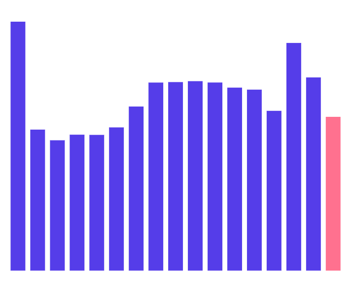
C. Texto mal colocado
Etiquetas rotadas o en ángulo: Dificultan la lectura rápida.
Exceso de negritas o cursivas: Si todo es resaltado, nada lo es.
Títulos poco descriptivos: Un título poco claro puede hacer que el gráfico no se entienda.
Mala elección de los valores en los ejes (tick labels). Los valores en un eje pueden no estar bien espaciados o elegidos de forma efectiva, lo que puede dificultar la interpretación de la tendencia en los datos.
Es más difícil comparar áreas y ángulos que longitudes en gráficos de barras.
Diferencias pequeñas entre segmentos son difíciles de percibir.
Si hay demasiados segmentos, el gráfico pierde claridad.
Alternativas mejores
Gráficas de barras: Permiten comparar valores más fácilmente.
Gráficas de líneas: Útiles para analizar tendencias en el tiempo.
Gráficas de área: Muestran la composición a lo largo del tiempo sin distorsionar proporciones.
Ejercicio (continuación)
Parte 4
En las siguientes gráficas, identifica errores o diseños incorrectos y corrige para mostrar correctamente la información.
# gráfica 1plt.pie(df['Pclass'].value_counts(), labels=["3ra Clase", "1ra Clase", "2da Clase"], autopct='%1.1f%%', explode=[0, 0.1, 0])plt.title("Distribución de pasajeros por clase")plt.show()# gráfica 2plt.bar(df['Pclass'].value_counts().index, df['Pclass'].value_counts().values, color="skyblue")plt.xlabel("Clase del boleto")plt.ylabel("Cantidad de pasajeros")plt.title("Cantidad de pasajeros por clase")plt.show()
5. Validación del mensaje transmitido
Para asegurarnos de que el gráfico cumple su función, es necesario validar su interpretación antes de presentarlo.
Revisión por pares o feedback externo.
Verificación de coherencia con los datos originales.
Pruebas de accesibilidad y claridad visual.
Consistencia con los principios de visualización.
Pruebas con usuarios finales.
Referencias bibliográficas
Few, S. (2012). Show me the numbers: Designing tables and graphs to enlighten. Analytics Press.
Tufte, E. R. (2001). The visual display of quantitative information. Graphics Press.
Cairo, A. (2016). The truthful art: Data, charts, and maps for communication. New Riders.
Munzner, T. (2014). Visualization analysis and design. CRC Press.
Levin, K. D. (2021). Lecture 10: matplotlib—Plotting with matplotlib. Recuperado de https://pages.stat.wisc.edu/~kdlevin/teaching/Spring2021/STAT679/slides/lecture10.pdf
Chau, D. H. (2024). Common visualization issues & how to fix them. Recuperado de https://poloclub.github.io/cse6242-2024spring-campus/slides/CSE6242-510-VisFix.pdf